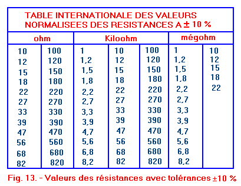

K = (K)Cathode, pôle "négatif" de la LED, patte la plus courte.
A = Anode, pôle "positif" de la LED, patte la plus longue.
Il s'agit d'une diode un peu particulière, qui a la propriété d'émettre de la lumière quand un courant la parcourt (de l'Anode vers la Cathode).
Une LED est prévue pour fonctionner à un courant nominal donné, par exemple 10 mA ou 20 mA.
Faire parcourir à la LED un courant trop intense risque de la détruire.
Une LED doit toujours être alimentée au travers d'un système de limitation (voire de régulation) du courant, qui se résume la plupart du temps à une simple résistance .
Exemple pour une led verte fonctionnant de façon nominale avec une tension de 2,2 V et un courant de 20 mA (0,02 A).
Calcul de la puissance exprimée en watts : P = U X I
Un microcontroleur arduino ou raspberry fourni une tension de 5 volt et 20 ma soit une puissance de 0.1 watt. Donc deux fois supérieur à celle absorbée par la Led qui s'echauffera et finira par grillée.
Pour calculer de la résistance à appliquer sur un circuit : U = R X I
Ce qui donne pour le calcul de la résistance : R = U / I
Reprenons notre exemple pour une led verte : tension de 2,2 V et un courant de 20 mA. L'arduino fourni donc une tension de 5 volt.
R = (Ualim - Uled) / Iled
(5 - 2,2) / 0,02 = 140 ohms
